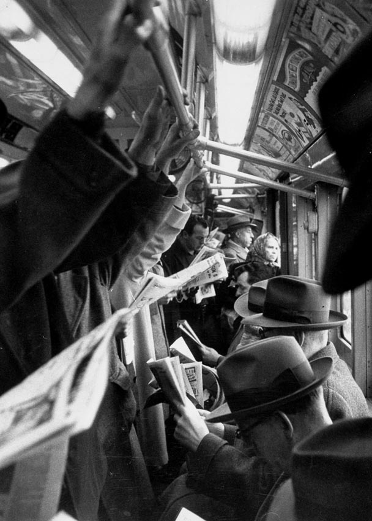
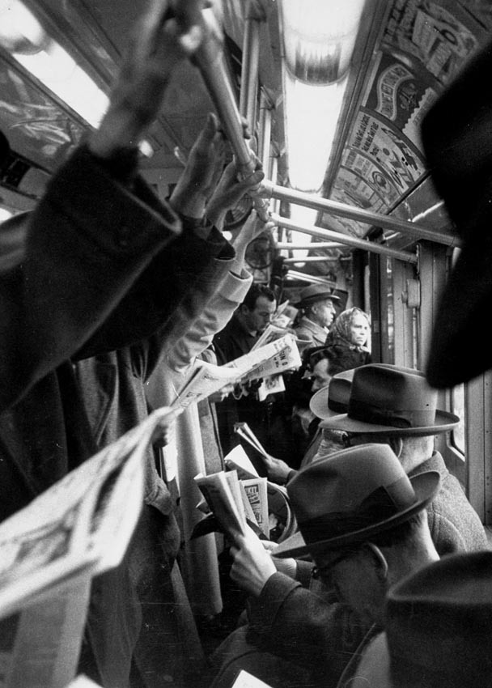
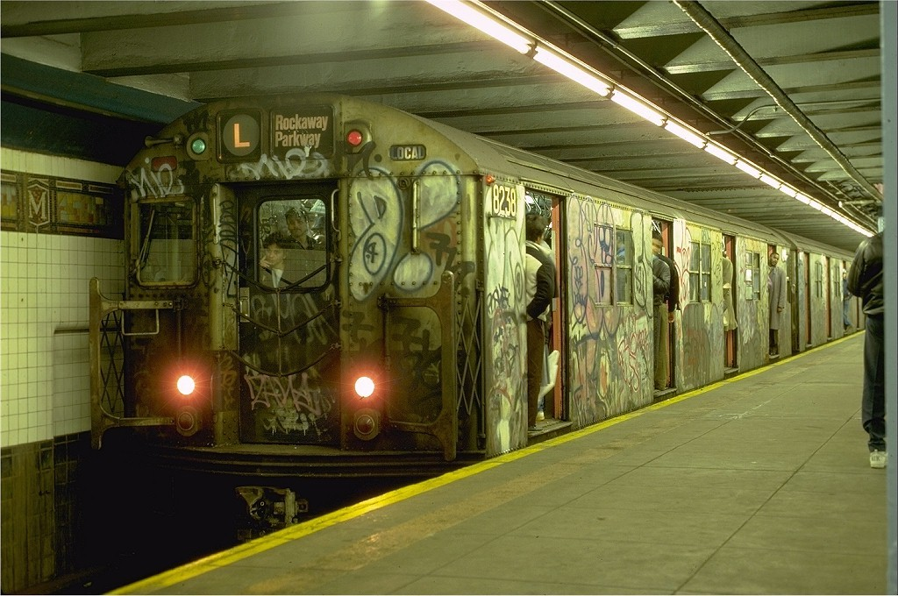
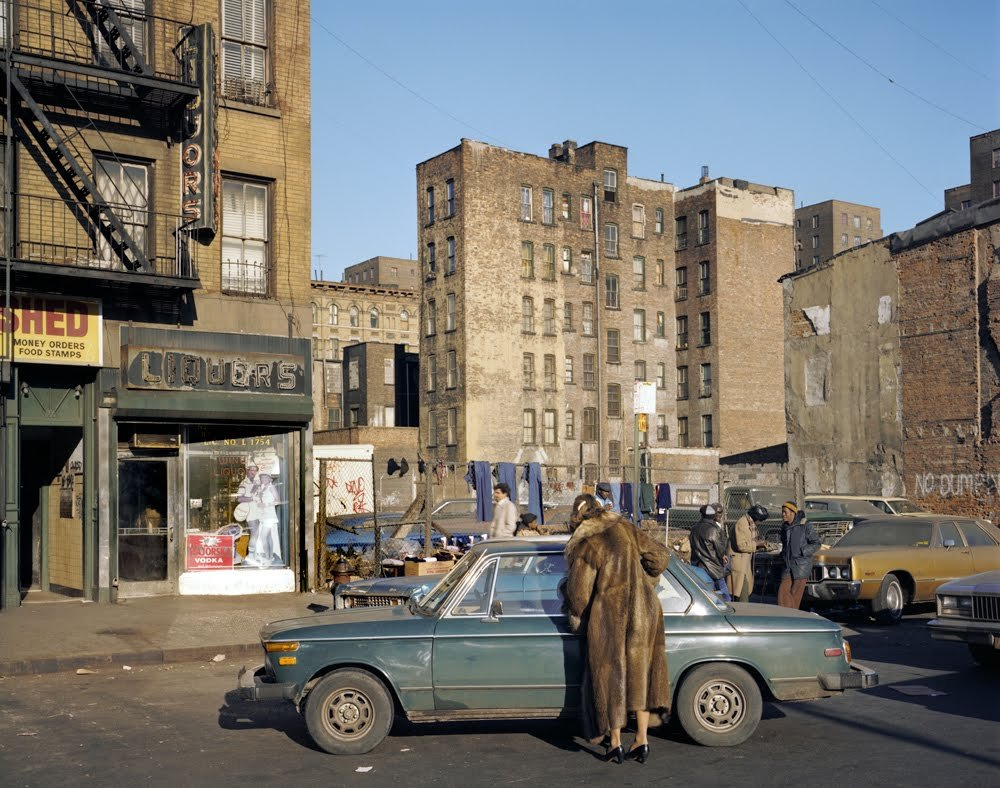

Metro New York 1952
Photo: Cornell Capa

Metro New York 1952
Photo: Cornell Capa
Winter in New York City’s Times Square in 1936.
(via http://www.nydailynews.com/new-york/winter-new-york-city-gallery-1.1238424?pmSlide=1.1238409)

The Stonewall Inn, Greenwich Village, 1969. A gay bar that sparked riots after the police raided it.
http://doyouremember.com/june-28th-1969-the-stonewall-riots-inflame-nycs-west-village/

L Train. The slowest train of them all.

Lower East Side, 1980s.
I’d love to know the story behind Ms. FurCoat…

Times Square in 1974. I can’t say I remember Hubert’s Museum. It looks, frankly, a bit underwhelming.

Revolt on the 1 train.

92nd and Broadway, looking north. 1975. Sweet ride.